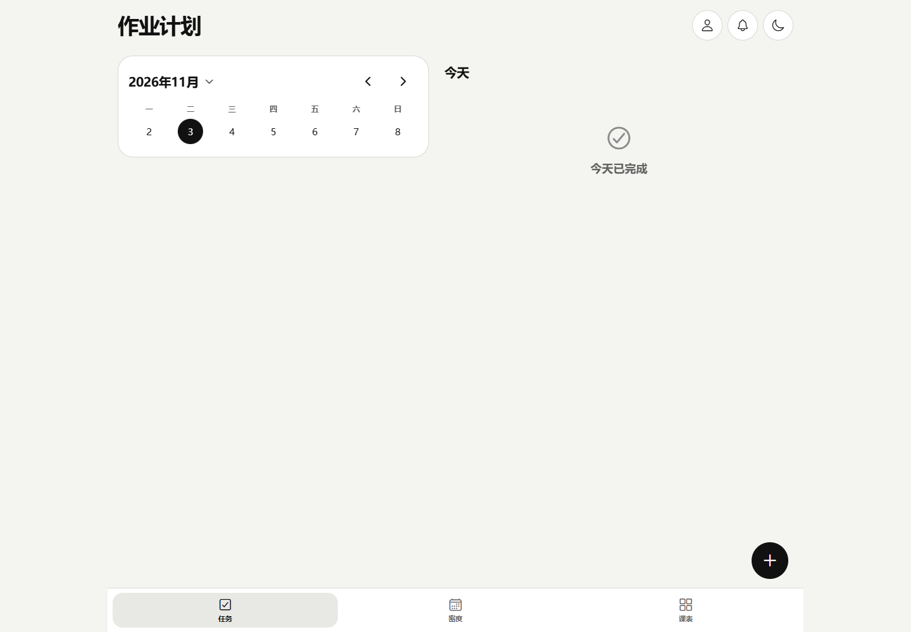
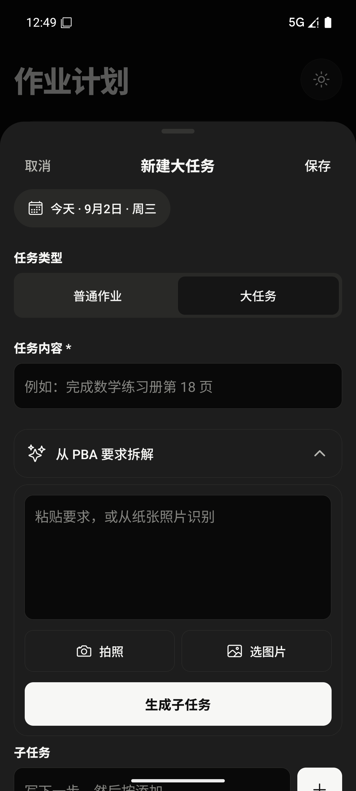
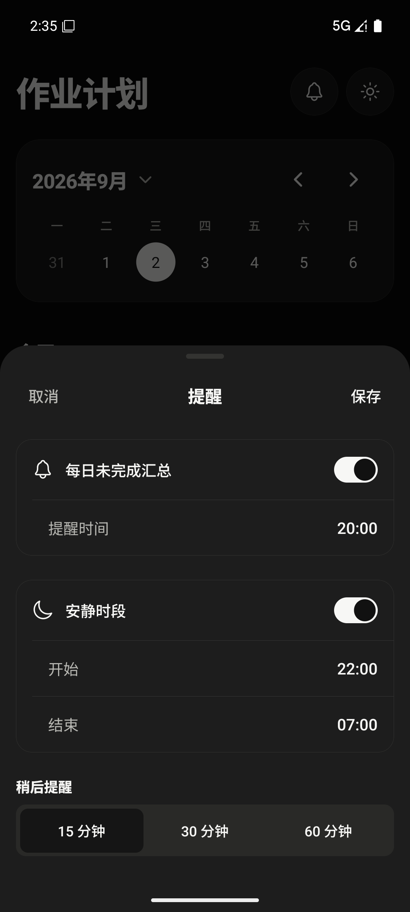
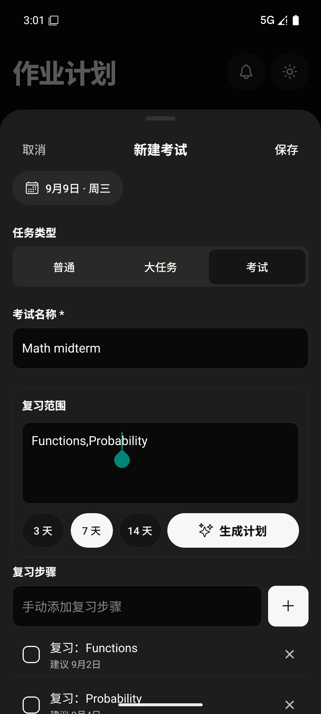

Homework Tracker
Big deadlines.
Smaller steps.
An offline-first planner that turns assignments and exam preparation into editable daily tasks.

From planning to daily use
The web view is a fresh local capture; phone views are archived emulator captures.






The everyday problem
A deadline says when work must be finished. It does not explain what to do today. Homework Tracker organizes assignments, longer projects, and exam preparation into tasks that can be reviewed and adjusted.
A plan students can edit


The documented workflows include choosing a date, adding assignments, setting reminders, and marking tasks complete. Exams can generate an editable revision plan working backward from the exam date.
A task-density calendar and timetable provide context alongside the daily list. Suggested steps and dates remain editable rather than becoming a fixed schedule.
Working offline
The project documents Android and Web clients with local persistence: SQLite on Android and IndexedDB on the web. Local changes and synchronization records are designed to be written together.
This brings an engineering question into a familiar setting: how should the planner preserve work when the network is unavailable, and reconcile changes when it returns?
Project status
The repository README records implemented planning, reminder, and account-sync features. This portfolio review has not independently rerun those workflows or established adoption metrics.
The next evidence to add is a real task-planning walkthrough and a documented account of individual contributions. Until then, this page describes the product and its implementation record.